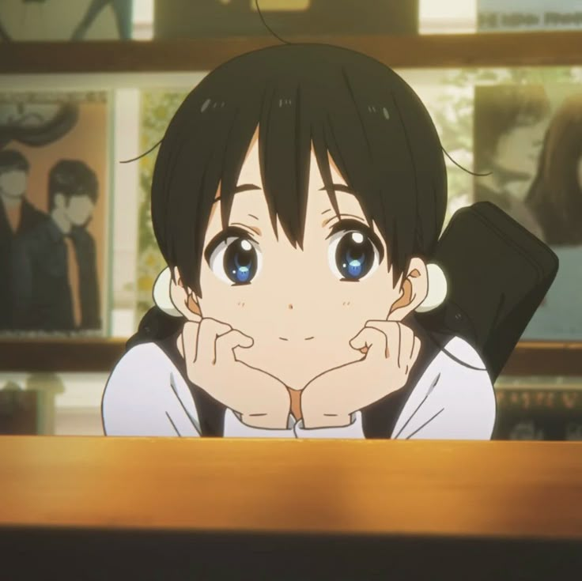
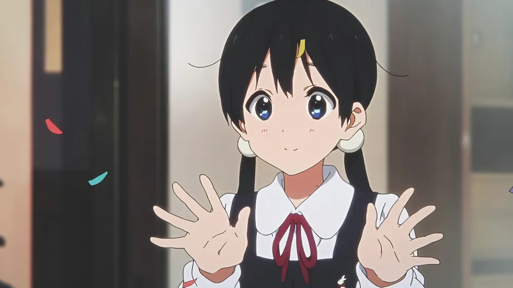
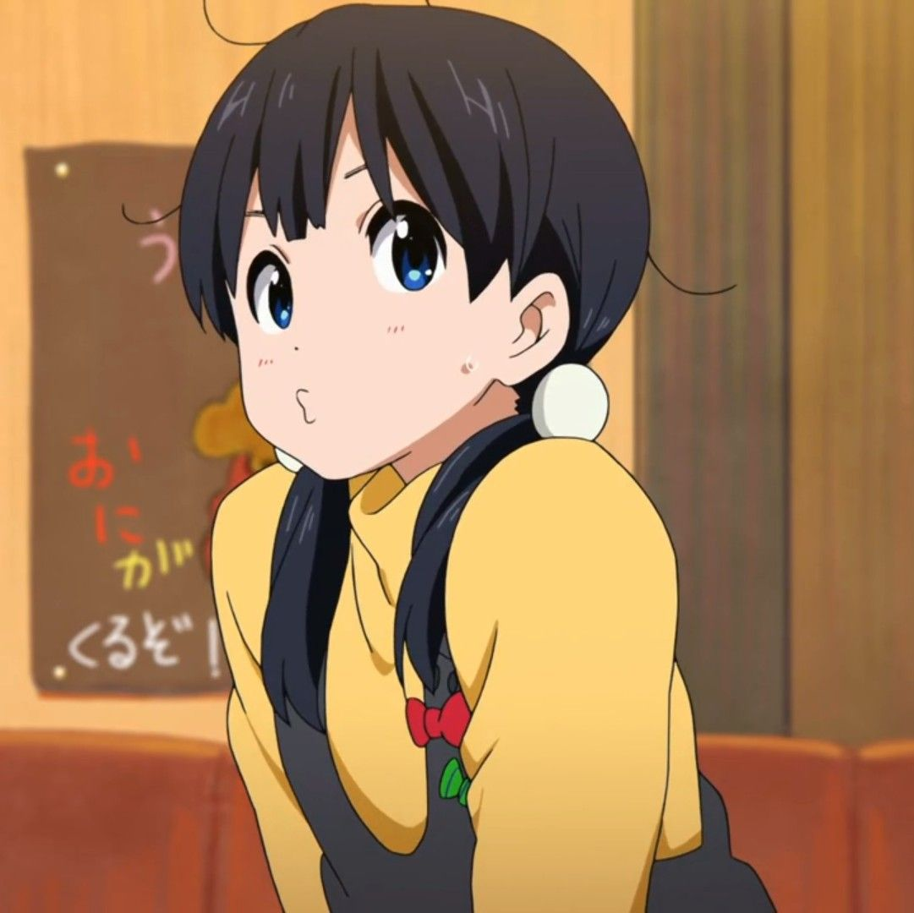

Beranda
✨

Selamat datang di halaman fanpage Tamako Kitashirakawa ✨
Di tengah suasana hangat distrik perbelanjaan Usagiyama,
Tamako hadir sebagai sosok sederhana yang selalu berhasil membawa kenyamanan lewat senyum
dan kepribadiannya yang tulus.
Sebagai karakter utama dari anime Tamako Market karya Kyoto Animation,
Tamako dikenal karena sifatnya yang ceria, polos, dan penuh perhatian terhadap orang-orang di sekitarnya.
Kehidupan sehari-harinya bersama keluarga pembuat mochi, teman-teman dekat, dan suasana kota kecil yang damai membuat anime ini terasa begitu wholesome dan menenangkan. Bagi banyak anime enjoyer, Tamako bukan hanya sekadar karakter anime, tetapi juga comfort character yang menghadirkan rasa nostalgia dan ketenangan setiap kali melihatnya muncul di layar. 🌸
“istri faras sejak 2018.”
Tentang Tamako
🌸
Kepribadian Hangat
Tamako dikenal sebagai pribadi yang baik hati, ramah, dan selalu memikirkan kebahagiaan orang lain terlebih dahulu. Walaupun terkadang terlihat sedikit ceroboh, sifat polos dan ketulusannya justru menjadi alasan banyak orang menyukai dirinya. Energi positif yang ia miliki membuat suasana di sekitarnya terasa lebih hangat dan nyaman.
Keluarga Mochi
Sebagai anak dari keluarga Kitashirakawa, Tamako tumbuh di lingkungan toko mochi tradisional bernama Tama-ya. Sejak kecil ia sudah terbiasa membantu keluarganya membuat dan menjual mochi kepada pelanggan. Kehidupan sederhana bersama keluarga inilah yang menjadi salah satu daya tarik utama dari anime Tamako Market.
Persahabatan
Hubungan Tamako dengan teman-temannya terasa natural dan penuh chemistry yang menyenangkan. Interaksi kecil, candaan sederhana, hingga momen keseharian mereka berhasil menciptakan suasana anime slice of life yang nyaman untuk ditonton. Persahabatan mereka menjadi salah satu bagian paling memorable dalam cerita.
Galeri
📸



Why People Love Tamako
💖
-
🌸 Kepribadian wholesome
-
🍡 Vibe anime nyaman
-
✨ Senyuman menenangkan
-
🎀 Desain karakter manis
-
💗 Comfort character terbaik